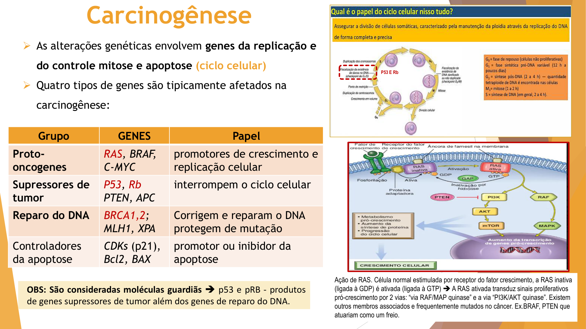
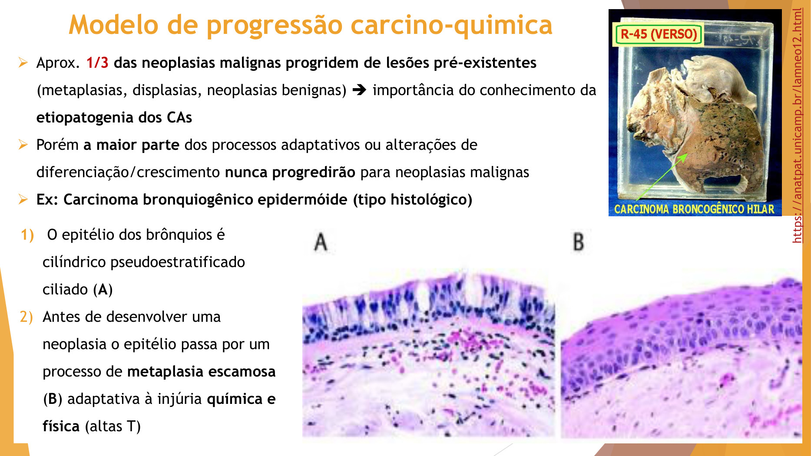
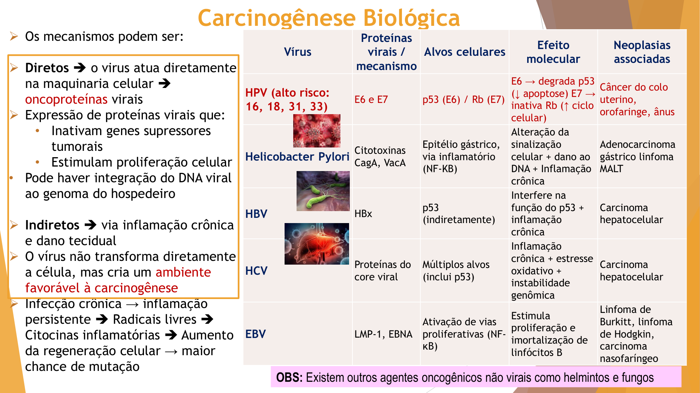
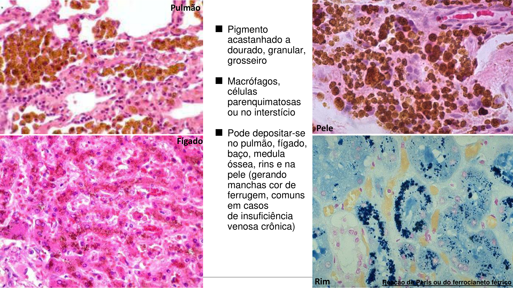
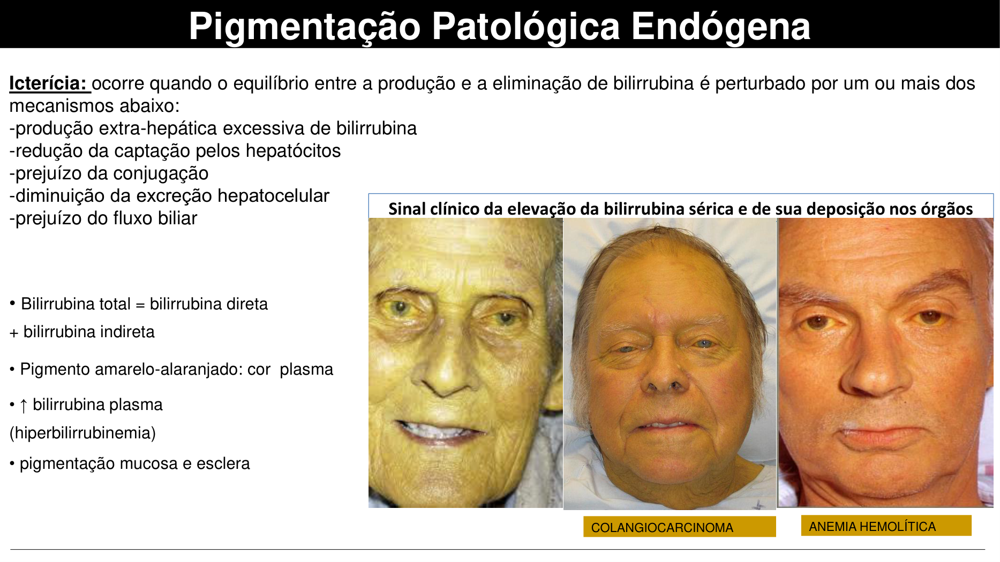
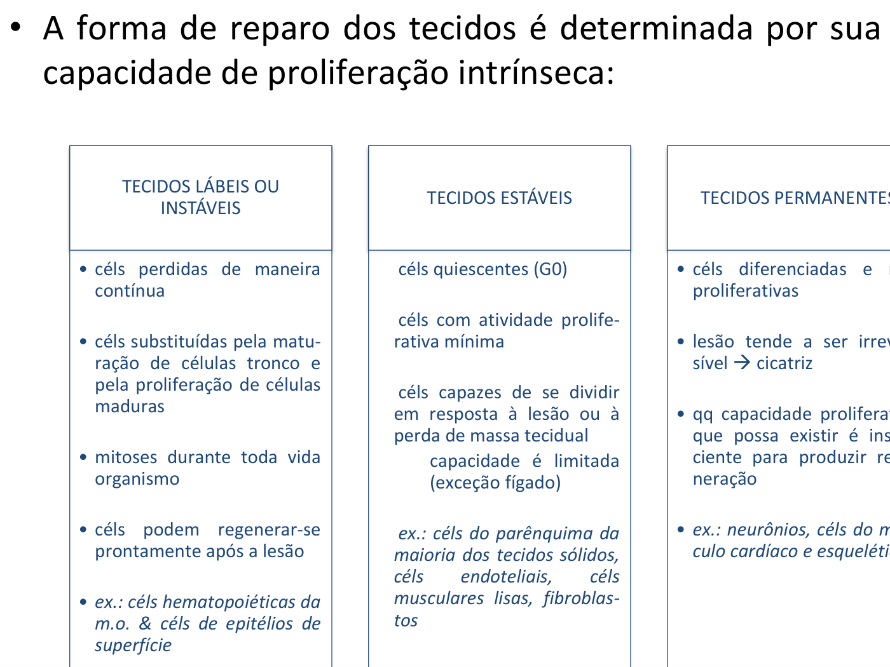
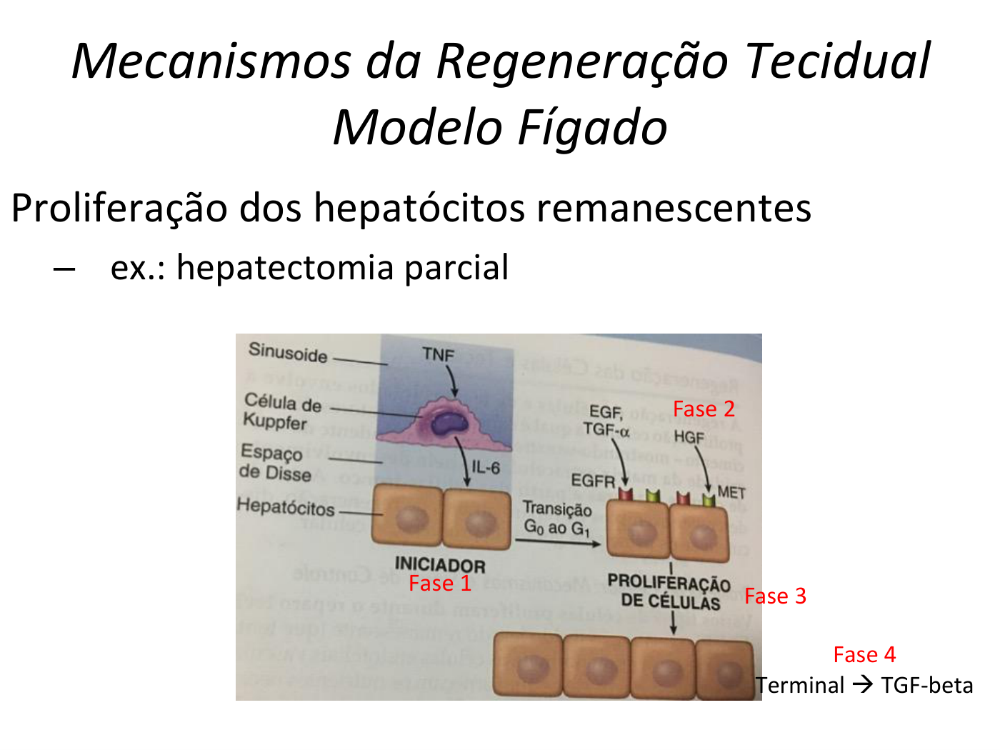
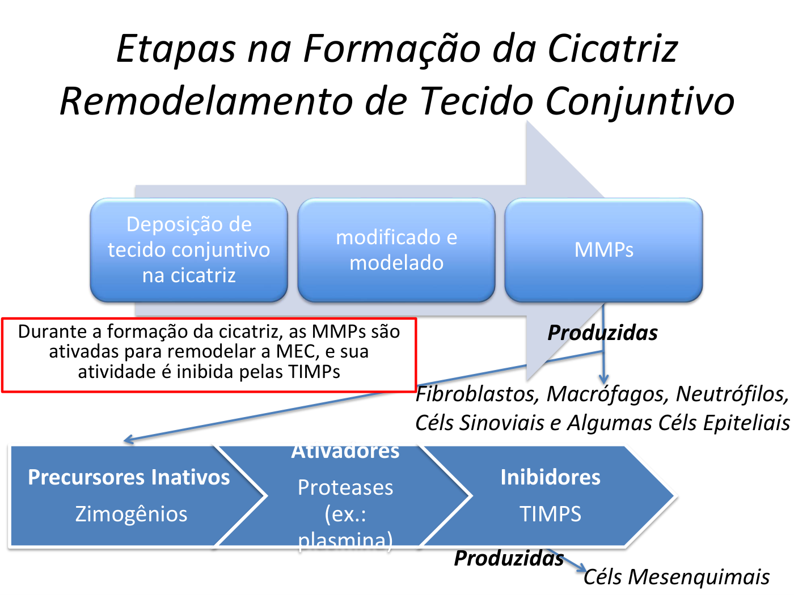
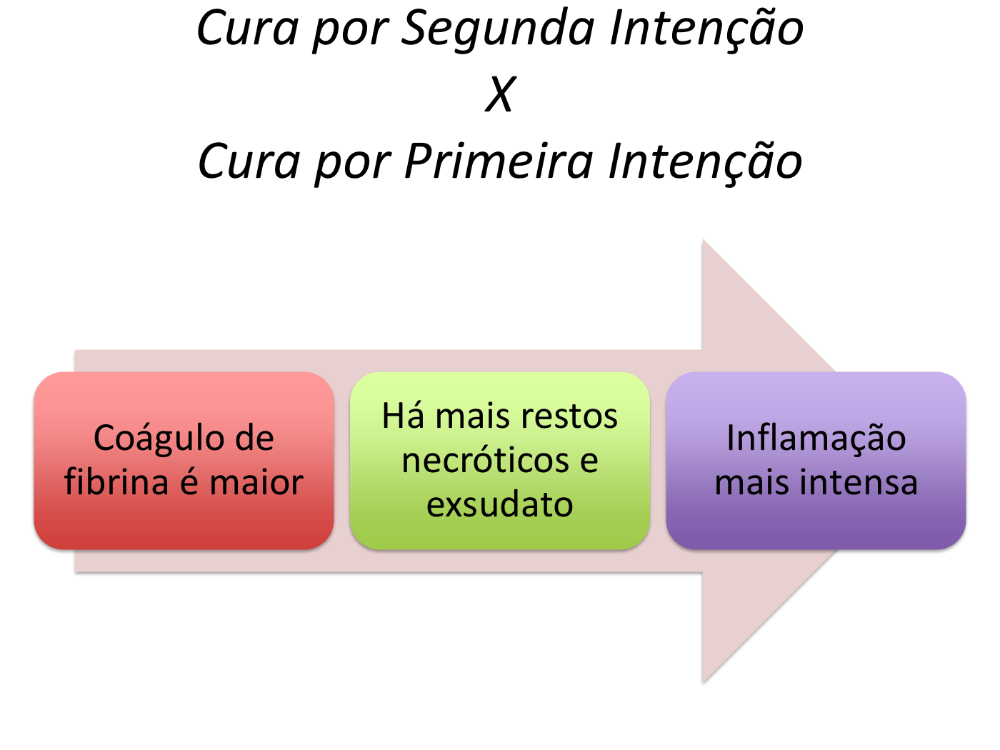
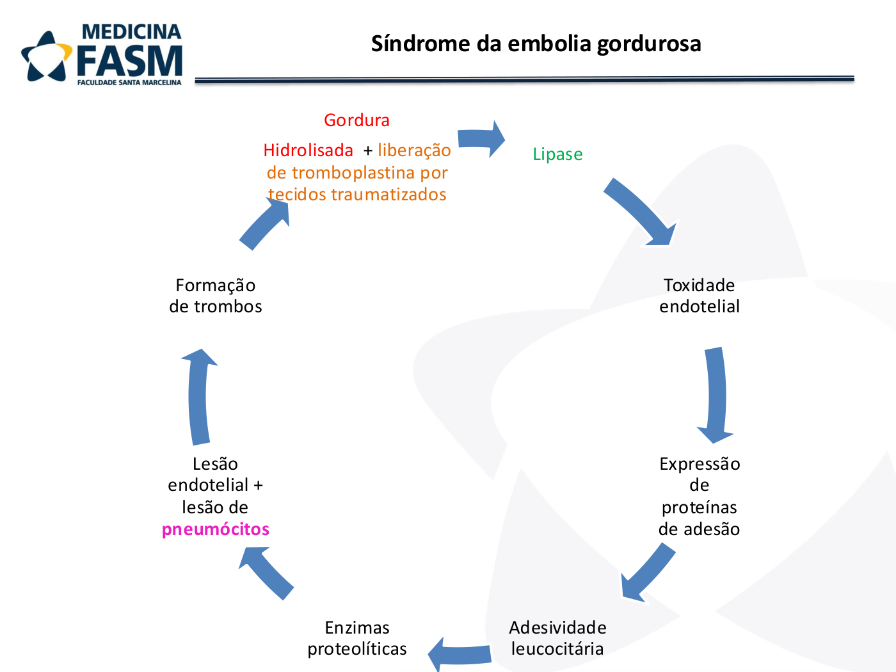

Carcinogênese
Profa. Dra. Veronica Yujra · 30 slides · ENAMED
1 · Por que estudar carcinogênese?
O câncer não nasce pronto: ele é o desfecho de um processo multietapas em que uma célula normal vai acumulando alterações no DNA até virar maligna. Entender essa lógica é o que permite (a) prevenir (evitar exposição a carcinógenos), (b) diagnosticar precocemente (identificar lesões precursoras antes do invasor) e (c) tratar de forma racional (alvos moleculares específicos).
A definição operacional usada pela professora: carcinogênese é o processo patológico no qual ocorre a transformação maligna de uma célula normal, envolvendo uma sequência de alterações irreversíveis do DNA e que origina um câncer em múltiplas etapas. Três pilares se sobrepõem nessa transformação: alterações em capacidade de proliferação, diferenciação e sobrevida.
A literatura atual (Kontomanolis 2020, Pitot 1993) consolida a carcinogênese como acumulação sequencial de alterações genéticas e epigenéticas — não apenas mutações de DNA, mas também modificações de cromatina (metilação, acetilação) e silenciamento por microRNAs que mudam a expressão gênica sem alterar a sequência[1][2][5]. Em 2016 a IARC formalizou as 10 características-chave dos carcinógenos (eletrofilicidade, genotoxicidade, alteração do reparo, alterações epigenéticas, estresse oxidativo, inflamação crônica, imunossupressão, imortalização celular, alteração de proliferação/morte e modulação de receptores) — esse arcabouço é usado pela IARC para classificar agentes como Grupo 1, 2A, 2B[7].
Por que os cânceres mais comuns são epiteliais?
A professora explica em probabilidade: tecidos que proliferam mais acumulam mais erros. Epitélios (lábio, mucosa oral, brônquios, colo uterino, mama, cólon) estão em ciclo celular constante — mais divisões = mais oportunidades de mutação. Em contraste, tecidos estáveis ou permanentes (miocárdio, neurônios) raramente displasiam ou viram câncer, justamente porque dividem pouco ou não dividem.
Reversibilidade da displasia é tecido-dependente: displasia leve em lábio costuma reverter com fotoproteção e remoção do agente; displasia em intestino dificilmente reverte. Ainda não existe biomarcador molecular preciso do "ponto de irreversibilidade".
Distinção câncer infantil × adulto
Cânceres em crianças acometem preferencialmente células pouco diferenciadas (precursoras) e exigem MENOS mutações para se manifestar — retinoblastoma é o exemplo paradigmático (RB inativada já é suficiente em contexto germinativo). Cânceres em adultos são bem mais comuns mas exigem mais mutações acumuladas. Isso conecta com outro ponto que a professora marca: o sistema de reparo é potente em jovens e fica progressivamente mais lento com a idade — daí a carcinogênese se acumular nas décadas.
Mutação condutora × mutação passageira
Terminologia que ela usa: mutação condutora (driver) é a iniciadora que "dirige" o processo; mutações passageiras (passenger) são as que se acumulam depois, em consequência da instabilidade genômica. Em sequenciamento tumoral, separá-las é o passo central para escolher alvo terapêutico.
RAS ativada indiretamente
Além de mutação direta no gene RAS, a via RAS pode ser ativada indiretamente por hiperexpressão de receptores de fatores de crescimento (HER2/ERBB2, EGFR). O receptor amplificado dispara a sinalização downstream mesmo com RAS "normal" — ganho de função "à distância".
HPV: epitélio-tropismo e DNA epissomal
O HPV tem tropismo por epitélios — explica por que afeta colo, ânus, orofaringe e não outros sítios. Curiosidade molecular destacada na aula: o DNA do HPV é um "anelzinho" epissomal (extracromossômico). As cepas de alto risco (16, 18) conseguem abrir esse anel e integrar ao genoma do hospedeiro — passo crítico para a malignização. As de baixo risco (6, 11) ficam só epissomais → verrugas, sem progressão maligna.
2 · Ciclo celular e os 4 grupos de genes
O ciclo celular tem duas grandes fases: a interfase (G1 → S → G2) e a mitose (M). Entre G1 e S existe um checkpoint que verifica a integridade do DNA antes da replicação; outro checkpoint, em G2/M, verifica se a replicação ocorreu corretamente antes da divisão. Se houver dano detectado, a célula pára o ciclo, repara o DNA — e se o reparo falha, dispara apoptose. Carcinogênese, em essência, é a perda desse controle.
| Grupo | Exemplos | Papel | Comportamento na carcinogênese |
|---|---|---|---|
| Proto-oncogenes | RAS, BRAF, C-MYC | Promotores de crescimento e replicação | Ganho de função (basta 1 alelo mutado → dominante) |
| Supressores de tumor | TP53, RB, PTEN, APC | Interrompem o ciclo celular | Perda de função (precisa inativar 2 alelos → recessivo) |
| Genes de reparo do DNA | BRCA1/2, MLH1, XPA | Corrigem mutações | Inativação aumenta taxa de mutação (efeito permissivo) |
| Controladores da apoptose | CDKs (p21), BCL2, BAX * | Promotor ou inibidor da apoptose | Resistência à apoptose = imortalização |
RAS é o protótipo do proto-oncogene: na célula normal ele alterna entre forma inativa (ligada a GDP) e ativa (ligada a GTP) sob estímulo do receptor de fator de crescimento. RAS ativada transduz sinal por duas vias paralelas — RAF → MAP-quinase e PI3K → AKT. Uma mutação que trave RAS na forma "ligada a GTP" significa proliferação contínua, sem precisar de estímulo externo. BRAF e PTEN são membros desse mesmo eixo frequentemente mutados.
Nota técnica sobre o 4º grupo da tabela. A literatura atual (Robbins, Anderson 1992[4]) distingue duas categorias frequentemente sobrepostas pelos slides: (a) reguladores do ciclo celular propriamente ditos — onde estão CDKs (proteínas-quinase ciclina-dependentes, positivas) e os inibidores de CDK ("CKIs": p21, p27, p57 da família CIP/KIP e p15, p16, p18, p19 da família INK4) — e (b) reguladores diretos da apoptose, da família BCL2/BAX/BAK. Tecnicamente, p21 é um inibidor de CDK (CKI), não uma CDK, e age principalmente como freio do ciclo. É justamente a p53 que, ao ativar p21, bloqueia indiretamente a apoptose por outra via (parada do ciclo + reparo).

"Por convenção: símbolos de genes em itálico, proteínas não. Então TP53 é o gene; p53 é a proteína. RB é o gene; RB é a proteína. Isso cai em prova."
3 · p53 e RB — as guardiãs do genoma
p53 (gene TP53) é chamada de "guardiã do genoma" porque evita que células com DNA defeituoso se propaguem. Em uma célula estressada por dano ao DNA, p53 é fosforilada (estabilizada — escapa da degradação por MDM2) e passa a agir como fator de transcrição que (a) interrompe o ciclo via p21 (que inibe complexos CDK4-6/ciclina-D e mantém RB hipofosforilado, retendo E2F), (b) promove transcrição de genes de reparo, (c) se o reparo der certo, p53 é degradada e o ciclo segue; (d) se o dano for irreparável, induz senescência (pela mesma via p21 → RB hipofosforilado → bloqueio de E2F → parada permanente do ciclo) ou apoptose (via transcrição de BAX, PUMA, NOXA).
Mutações em TP53 são encontradas em mais de 50% dos cânceres humanos. Mutações germinativas geram a síndrome de Li-Fraumeni, com risco enormemente aumentado de múltiplos tumores. Sem p53 funcional, células com DNA danificado continuam a se dividir — é o passo central para imortalidade celular.
RB (proteína do retinoblastoma) é o protótipo do supressor: ela regula a passagem G1 → S sequestrando o fator de transcrição E2F. Quando RB está mutado, E2F fica livre e a célula avança no ciclo sem precisar de estímulo. Vírus oncogênicos de DNA — particularmente HPV (E7) — produzem proteínas que se ligam diretamente a RB, simulando essa mutação.
4 · Proto-oncogenes vs. oncogenes
Proto-oncogenes são genes normais que regulam proliferação. Quando mutados ou hiperexpressos, viram oncogenes — ganho de função dominante (basta um alelo alterado). Há duas grandes vias para ativar uma via carcinogênica:
- Ativação de um proto-oncogene (ganho de função) — ex: RAS mutada estimula proliferação contínua; MYC superexpresso aumenta transcrição de genes do ciclo.
- Inativação de um supressor de tumor (perda de função) — ex: TP53 inativada, RB inativada.
| Oncogene | Função normal | Tumor associado |
|---|---|---|
| RAS, ABL | Proteína de transdução de sinais | Ca pulmão, cólon, leucemia mieloide e linfoide |
| ERBB1, ERBB2 | Receptor de fator de crescimento | Ca pulmão, mama, ovário, estômago |
| MYC | Proteína reguladora nuclear (TF) | Neuroblastoma, Ca pulmão de pequenas células |
5 · As três etapas: Iniciação, Promoção, Progressão
Carcinogênese envolve obrigatoriamente três fenômenos cumulativos, transmitidos às células-filha:
- Iniciação — dano genético irreversível. Formação de adutos no DNA + mutação em genes críticos (ex: RAS, TP53). A célula iniciada é geneticamente alterada mas ainda não cresce sozinha.
- Promoção — expansão clonal reversível das células iniciadas. Estímulo proliferativo contínuo (ex: exposição crônica a tabaco). Não envolve, obrigatoriamente, novas mutações inicialmente. Se cessar a exposição, regride.
- Progressão — acúmulo de novas mutações + instabilidade genômica → fenótipo maligno irreversível. É aqui que ocorre a inativação dos dois alelos de supressores tumorais.
Não confundir: genotoxicidade (capacidade de lesar DNA) ≠ mutagenicidade (capacidade de gerar mutação fixada) ≠ carcinogenicidade (capacidade de causar câncer). Nem todo agente genotóxico é mutagênico; nem todo mutagênico é carcinogênico completo. Existem iniciadores puros, promotores puros e carcinógenos completos (iniciam e promovem).

6 · Mecanismos carcinogênicos: físicos, químicos e biológicos
6.1 · Agentes físicos
Menos numerosos que os químicos, mas bem definidos — lesam diretamente o DNA. O principal é a radiação UVB, cumulativa.
Sequência: UVB → formação de dímeros de pirimidina (especialmente dímeros de timina) → falha do reparo (sistema NER — nucleotide excision repair) → mutação em TP53 → expansão clonal → ceratose actínica → carcinoma (CEC, CBC).
Tanto queratinócitos quanto melanócitos sofrem efeitos da UVB. A radiação UVA favorece a inflamação. A doença genética xeroderma pigmentoso é o exemplo clássico de defeito hereditário do NER, com risco enorme de Ca de pele.
| Agente físico | Mecanismo principal | Câncer associado |
|---|---|---|
| Radiação UV | Dímeros de DNA | CEC, CBC, melanoma |
| Radiação ionizante | Quebra de DNA, geração de radicais livres | Leucemia, tireoide |
| Trauma crônico | Promoção tumoral | Úlcera de Marjolin (malignização de feridas crônicas) |
| Calor crônico | Irritação persistente | Câncer cutâneo |
6.2 · Agentes químicos
A IARC aponta mais de 130 agentes químicos carcinogênicos isolados ou conjugados. O carcinógeno completo mais relevante é o tabaco. O tabagismo crônico tem associação comprovada com: pulmão, gástrico, cabeça e pescoço, boca, esôfago.
No câncer de pulmão, 90% dos casos ocorrem em tabagistas ou ex-tabagistas. A exposição é múltipla: hidrocarbonetos policíclicos aromáticos (HAP, ex: benzopireno), nitrosaminas (NNK, NNN), aminas aromáticas, radicais livres. A maioria precisa de ativação metabólica hepática pelo CYP450 para virar carcinógeno ativo.
Mecanismo em fases no tabagismo: (1) formação de adutos no DNA → mutações em RAS, TP53; (2) estímulo proliferativo crônico + inflamação + estresse oxidativo → expansão clonal; (3) instabilidade genômica + inativação de p53/p16 (CDKN2A) → malignização. A cessação diminui o risco, mas não volta ao basal — as alterações genéticas podem persistir por anos.
Outros químicos relevantes: álcool (via indireta pelo acetaldeído e adutos de DNA), quimioterápicos alquilantes (danos subletais ao DNA — não anula seu uso terapêutico mas eleva risco de segundo tumor).
6.3 · Agentes biológicos
Os mecanismos podem ser diretos (vírus expressa oncoproteínas que inativam supressores e/ou ativam proliferação; pode integrar DNA ao genoma) ou indiretos (inflamação crônica + dano tecidual → ambiente favorável a mutação).
| Vírus/agente | Proteínas/mecanismo | Alvos celulares | Efeito | Neoplasias |
|---|---|---|---|---|
| HPV (alto risco: 16, 18, 31, 33) | E6 e E7 | p53 (E6), RB (E7) | E6 degrada p53 (↓apoptose); E7 inativa RB (↑ciclo) | Colo uterino, orofaringe, ânus |
| HBV | HBx | p53 (indireto) | Inflamação crônica + interferência em p53 | Carcinoma hepatocelular |
| HCV | Proteínas do core viral | Múltiplos (inclui p53) | Inflamação crônica + estresse oxidativo + instabilidade genômica | Carcinoma hepatocelular |
| EBV | LMP-1, EBNA | Vias NF-κB | Proliferação e imortalização de linfócitos B | Linfoma de Burkitt, Hodgkin, Ca nasofaríngeo |
| Helicobacter pylori | CagA, VacA | Epitélio gástrico, NF-κB | Sinalização alterada + dano ao DNA + inflamação crônica | Adenocarcinoma gástrico, linfoma MALT |
HPV: sequência clássica passo a passo
- Infecção por HPV (alto risco: 16, 18 são os principais)
- Entrada em células basais do epitélio cervical
- Integração do DNA viral ao genoma do hospedeiro — passo crítico para malignidade
- Expressão de E6 (↓p53) e E7 (↓RB)
- Proliferação celular descontrolada → instabilidade genética
- Displasia (NIC I → NIC II → NIC III) → carcinoma in situ → carcinoma invasivo
Achado histológico característico: coilócitos (células com halo perinuclear claro e núcleo atípico).

7 · Hallmarks atuais — visão de evidência
Além dos mecanismos clássicos, revisões recentes (Grunt 2023, Pruitt 2016, Tafani 2015) enfatizam que a aquisição das características malignas é acelerada por inflamação crônica e estresse oxidativo (ROS). ROS atua em todas as fases: na iniciação induz mutações; na promoção amplifica sinais proliferativos e inativa supressores; na progressão favorece instabilidade genômica ao danificar mecanismos de reparo. HIF (hypoxia-inducible factor), NF-κB e sirtuínas modulam o ambiente tumoral pró-inflamatório[8].
O sequenciamento de genomas tumorais revelou heterogeneidade extrema: o câncer de mama, por exemplo, tem centenas de "mutações condutoras" distintas. A medicina de precisão se apoia exatamente aqui — escolher o alvo terapêutico molecular específico do tumor daquele paciente[1][6].
8 · Aplicação clínica — caso da aula
Caso (apresentado pela professora): Márcio, 32 anos, pedreiro. Lesão ulcerada em borda lateral da língua há 3 meses, inicialmente indolor, agora sintomática. Tabagista desde os 14 anos (~25 maços/ano), há 5 anos substituiu por vape. Etilista social frequente. Exame: úlcera de ~2,5 cm com bordas endurecidas e elevadas, áreas leucoplásicas adjacentes, linfonodo cervical endurecido. "Biópsia: resultado anexo" (não transcrito).
Diagnóstico provável (inferência baseada no quadro clínico — não declarado nos slides): carcinoma epidermoide (CEC) de língua, plausivelmente com linfonodo regional comprometido. Esse é o diagnóstico esperado em provas a partir da combinação úlcera de bordas endurecidas + leucoplasia + linfonodo cervical em tabagista crônico.
(a) Prováveis agentes iniciadores e genes envolvidos:
- Tabaco (HAPs como benzopireno, nitrosaminas NNK/NNN) — ativação metabólica pelo CYP450 forma adutos de DNA → mutações em TP53 e RAS.
- Álcool — acetaldeído forma adutos de DNA (via indireta).
- Genes mais frequentemente mutados em Ca de cabeça e pescoço: TP53, CDKN2A (p16), NOTCH, RAS.
(b) Promotores favorecendo a progressão:
- Exposição crônica e contínua (estímulo proliferativo sustentado).
- Inflamação crônica local + estresse oxidativo (efeito do cigarro/vape e do álcool).
- Alteração da resposta imune local (imunossupressão tabágica) + dano contínuo ao microambiente da mucosa.
- "80 a 90% dos cânceres estão envolvidos com epigenética/meio ambiente — muito menos de 10-20% são fatores genéticos puros. Loucura, né? A gente acha que é o contrário." Desconstrói o senso comum de que câncer é "principalmente hereditário".
- "Relação solo e semente" (citação do Bichó): a célula mutada é a semente, mas o hospedeiro (estado inflamatório, imunidade, idade, dieta) é o solo. Um mesmo agente é carcinogênico em um paciente e não em outro — depende do solo. Por isso HIV não é carcinogênico direto, mas torna o solo permissivo (candidíase oral, sarcoma de Kaposi).
- "1/3 dos cânceres têm lesão precursora; 70% não têm." Por isso rastreamento funciona bem em colo, brônquio, intestino (têm precursoras visíveis) e mal em outros tumores.
- "Após 10 anos sem fumar, o risco cai pela metade — mas não volta ao basal." Número específico que ela citou. As alterações genéticas podem persistir por anos.
- "Cigarro = iniciador + promotor (carcinógeno completo); álcool = promotor por excelência." Quem fuma E bebe acelera muito porque combina iniciador potente com promotor potente.
- "O CA pelo tabaco revelou uma assinatura mutacional típica" — TP53 + RAS + CDKN2A (p16) + NOTCH.
- "Gene em itálico, proteína sem itálico — cai em prova."
✓ Checkpoint — Carcinogênese
- → Carcinogênese = processo multietapas, irreversível no DNA, com 3 fases (iniciação, promoção, progressão).
- → 4 grupos de genes afetados: proto-oncogenes (ganho de função, dominante), supressores (perda, recessivo, precisa 2 alelos), reparo do DNA, apoptose.
- → p53 mutada está em >50% dos cânceres; síndrome de Li-Fraumeni = TP53 germinativo. RB inativada por HPV-E7 mimetiza mutação de RB.
- → Iniciação é irreversível; promoção é reversível (cessar exposição regride); progressão = inativação dos 2 alelos de supressores.
- → Agente físico principal: UVB (dímeros de pirimidina, alvo TP53). Xeroderma pigmentoso = defeito do NER.
- → Agente químico principal: tabaco (carcinógeno completo, 90% Ca pulmão). HAPs e nitrosaminas precisam de ativação por CYP450.
- → HPV: E6→p53, E7→RB. Coilócitos no Pap. Integração do DNA viral = passo crítico.
- → H. pylori → adenocarcinoma gástrico + linfoma MALT (via inflamação crônica + CagA/VacA).
- → Inflamação crônica e ROS aceleram todas as fases — por isso o estado pró-inflamatório é "promotor universal".
Pigmentações
Profa. Dra. Regiane Mathias · 56 slides · Patologia I
1 · O que é pigmentação patológica?
"Pigmento" vem do latim pigmentum (corante, cor). São substâncias de origens, composições químicas e significados biológicos diferentes, com cor própria, que conferem cor a tecidos do organismo. Pigmentação, por sua vez, é o processo de formação e/ou acúmulo — normal ou patológico — desses pigmentos.
Para o patologista, a classificação fundamental é por origem:
- Endógenas — pigmentos produzidos pelo próprio organismo.
- Derivados da hemoglobina ferruginosos (hemossiderina, hematina, hemozoína, pigmento esquistossomótico) ou não-ferruginosos (bilirrubina, hematoidina).
- Lipofuscina (pigmento do envelhecimento).
- Melanina (em alterações associadas — albinismo, melanoma, doença de Addison).
- Exógenas — pigmentos vindos do exterior por três vias: inalatória, digestiva e parenteral. Família dos exógenos citados: carvão (antracose), sílica (silicose), prata (argíria), ouro, tatuagens.
Causas gerais de pigmentação patológica (organizadoras de raciocínio dadas pela professora):
- Distúrbios metabólicos (ex: hemocromatose, alcaptonúria);
- Agressões ambientais (ex: tatuagem, antracose);
- Processo de senescência (ex: lipofuscina).
Curiosidade do slide inicial citada pela professora: pigmentação cutânea anormal pode aparecer em sardas/efélides, alcaptonúria (pigmento do ácido homogentísico) e vitiligo (despigmentação por destruição imune de melanócitos). Albinismo é o defeito genético clássico da melanogênese. Melanócitos e patologia dérmica aprofundada ficam para Dermatologia 4.
2 · Metabolismo do ferro — base para entender a sobrecarga
O ferro é essencial (transporte de O₂, transferência de elétrons, síntese de DNA) mas altamente reativo — propicia formação de radicais livres. O organismo guarda 4-5 g de ferro: ~65-70% na hemoglobina, ~10% em mioglobina/citocromos/enzimas, e ~20-30% como reserva (ferritina e hemossiderina, em hepatócitos e macrófagos).
Absorção: ocorre no duodeno e jejuno proximal. O ferro não-heme é primeiro reduzido a Fe²⁺ (na borda em escova do enterócito; o slide indica essa redução como pré-requisito para o transporte) e então captado pela DMT1 (transportador de metal divalente 1) para o interior do enterócito. Nota técnica: a redução química propriamente dita é realizada pela citocromo b duodenal (DCYTB), e a DMT1 atua como transportador da forma já reduzida — o slide apresenta as duas etapas de forma combinada.
Destino no enterócito: ou é armazenado na ferritina, ou é exportado para o sangue pela ferroportina.
Transporte: no sangue, ferro oxidado se liga à transferrina, que leva o ferro às células — principalmente medula óssea para eritropoiese.
Regulação central — hepcidina: hormônio peptídico produzido no fígado. Funciona como "freio" do ferro:
- Ferro alto → ↑hepcidina → ↓absorção e ↓liberação → previne acúmulo.
- Ferro baixo → ↓hepcidina → ↑absorção e ↑liberação dos estoques.
Por que hepcidina é regulável agudamente? Por ser um peptídeo (e não esteroide ou amina derivada de tirosina) — peptídeos têm meia-vida curta e podem ser produzidos e degradados rapidamente em resposta a sinais. A professora aproveita para situar a hepcidina entre as 3 famílias hormonais (peptídicos, aminas, esteroides).
Quantitativos orais úteis (citados em aula): absorvem-se ~1-2 mg de ferro por dia da dieta; ~100 mg ficam armazenados no fígado. Por isso uma dieta pobre em ferro repõe lentamente, e a sobrecarga (hemocromatose) leva décadas para se manifestar.
Importante: não há mecanismo ativo de excreção do ferro — perdas só ocorrem por sangramento. Por isso a sobrecarga é tão difícil de reverter.
3 · Hemossiderina, hemossiderose e hemocromatose
A hemossiderina é um pigmento derivado da quebra da hemoglobina, composto por ferro insolúvel agregado. Forma-se quando há oferta excessiva de ferro: a ferritina "transborda" e se agrega.
Patogênese passo a passo:
- Incorporação da ferritina do citosol em agregados pelo retículo endoplasmático liso → vacúolos autofágicos;
- Fusão dos vacúolos autofágicos com lisossomos → siderossomos;
- Desnaturação e degradação enzimática das proteínas da membrana e da ferritina;
- Persistência de agregados maciços e insolúveis de ferro → hemossiderina.
Aspecto: pigmento acastanhado a dourado, granular, grosseiro, em macrófagos ou no interstício. Detectado pela reação de Perls (ferrocianeto férrico — cora o ferro em azul).
Hemossiderose: dois tipos
Localizada — em hematomas/hemorragias e em congestão passiva crônica:
- ICC esquerda → congestão pulmonar → extravasamento de hemácias para alvéolos → macrófagos fagocitam → "células do vício cardíaco" abarrotadas de hemossiderina nos espaços alveolares. Detalhe clássico.
- ICC direita → congestão hepática → padrão "fígado em noz-moscada" (citado pela professora).
Sistêmica (difusa) — deposição em macrófagos do SRE (baço, fígado, medula óssea) e/ou parênquima (hepatócitos, túbulos contornados proximais, células acinares e insulares do pâncreas, coração). Em geral, não tem repercussão clínica. Mecanismos:
- Destruição excessiva de hemácias (anemias hemolíticas, falciforme, autoimunes, transfusões múltiplas).
- Ingesta excessiva de ferro além da capacidade reguladora intestinal.

Hemocromatose primária (hereditária)
Distúrbio autossômico recessivo que resulta em maior absorção intestinal de ferro. Causado por mutações no gene HFE (cromossomo 6) — as principais são C282Y (homozigose é a mais relevante clinicamente) e H63D.
Patogenia: deposição maciça e cumulativa de hemossiderina em fígado, coração, pâncreas, rins, pele e articulações. O ferro, sendo altamente reativo (muda facilmente de valência), gera radicais livres lesivos às células — mecanismo chamado reação de Fenton. Isso causa cirrose hepática e predisposição a hepatocarcinoma.
Tríade clássica — "diabete bronzeada":
- Fibrose do pâncreas (com destruição das ilhotas) → diabetes mellitus.
- Pigmentação escura da pele (deposição de hemossiderina nas glândulas sudoríparas e camada basal).
- Cirrose hepática.
Outros acometimentos clínicos destacados pela professora:
- Articulações sinoviais pequenas (mãos e pés): deposição férrica gera artrite inflamatória e perda de mobilidade — "crudismo" (termo usado em aula).
- Idade típica de manifestação: fase adulta, geralmente após os 40 anos (depende do metabolismo individual e da carga genética).
- Não há tratamento curativo — flebotomia retira o ferro acumulado, modificação de estilo de vida atenua, mas a sobrecarga genética persiste. Aluno citou em sala caso familiar real (pai, tio e avô com hemocromatose hereditária e diabete bronzeada).
Caso clínico da aula: homem de 50 anos, fraqueza, letargia, bronzeamento cutâneo, glicemia de jejum 145 mg/dL, saturação de transferrina e ferritina aumentadas. Homozigoto C282Y. Imagem com fígado cirrótico. → Diagnóstico: hemocromatose hereditária. Tratamento: flebotomia seriada (única forma prática de retirar ferro).
- "Hemossiderina é o pigmento proveniente da quebra da hemoglobina — é isso que eu quero que vocês levem daqui." (repetido 3× na aula como mensagem-chave).
- "Hemossiderose por mais que tenha acúmulo, não mata a pessoa; hemocromatose pode levar até a hepatocarcinoma." Contraste de mortalidade — âncora mental.
- Decoreba útil: ferritina ALTA + saturação de transferrina ALTA + dano de órgão = pensar em hemocromatose.
- "Diabete bronzeada" = rótulo decoreba (pele bronzeada + diabetes ⇒ hemocromatose).
- "Reação de Fenton produz superóxidos e radicais livres — quanto mais radical livre, mais envelhecimento precoce e câncer." Conecta o tema com a lipofuscina (à frente).
- "Na prática, vocês só vão ver antracose, lipofuscina e hemossiderina." Foco a estudar.
- "Hematina e hematoidina NÃO têm repercussão clínica — só acumulou, ficou. Marcador histológico, mais nada."
4 · Hematina, hemozoína e pigmento esquistossomótico
Hematina é um pigmento escuro azulado que contém ferro férrico (ferriprotoporfirina IX), formado por oxidação do heme — geralmente por ácidos ou álcalis fortes, ou como artefato histológico pela ação do formaldeído sobre a hemoglobina. Aparece como grânulos negros ou negro-azulados no interstício e em macrófagos. Inibe síntese de porfirina e estimula síntese de globina; é componente de citocromos e peroxidases.
Hemozoína (= hematina malárica = pigmento palúdico) — pigmento marrom-escuro formado pela agregação tóxica do heme livre, liberado durante a digestão da hemoglobina por parasitos como Plasmodium. É, na verdade, uma estratégia de destoxificação do parasito: a enzima heme polimerase agrega o heme em cristais insolúveis, neutralizando sua toxicidade — permitindo que o Plasmodium use a hemoglobina como fonte de aminoácidos.
Quando os eritrócitos infectados se rompem, a hemozoína é liberada e fagocitada por macrófagos no fígado (células de Kupffer) e baço — onde induz estresse oxidativo e apoptose, contribuindo para a patologia da malária. Tem efeitos pró-inflamatórios e modula o sistema imunológico, podendo aumentar suscetibilidade a infecções bacterianas. Sua presença em macrófagos é marcador de infecção malárica.
Pigmento esquistossomótico — produzido no tubo digestivo do esquistossoma, hematófago, a partir da degradação da hemoglobina do hospedeiro. Forma cristais semelhantes à hemozoína (gotas lipídicas extracelulares na luz intestinal do verme). Quando o verme regurgita o pigmento, ele cai na circulação do hospedeiro e é fagocitado por células de Kupffer, macrófagos do baço e tecido conjuntivo dos espaços portobiliares. Acúmulo aparece como grânulos castanho-escuros a negros.
5 · Bilirrubina e icterícia
Bilirrubina é o pigmento amarelado, amarelo-alaranjado no plasma, produto final do catabolismo da fração heme. 80-85% vem da degradação de hemácias senescentes (catabolizadas por macrófagos do baço, fígado e medula); os 15-20% restantes vêm de outras hemoproteínas (citocromos, catalase, peroxidase, mioglobina). Fórmula prática usada na aula: bilirrubina total (BT) = bilirrubina direta (BD) + bilirrubina indireta (BI).
Atenção clínica adicional citada pela professora: a sobrecarga crônica de excreção biliar de bilirrubina (típica das doenças hemolíticas crônicas) favorece a formação de cálculos pigmentares, constituídos principalmente por bilirrubinato de cálcio.
Metabolismo
- Heme → biliverdina → bilirrubina indireta (não conjugada): insolúvel em água, transportada no sangue ligada à albumina.
- No hepatócito: ligandina e proteína Z mantêm a bilirrubina indireta solúvel no citosol; é levada ao REL para conjugação com ácido glicurônico.
- Bilirrubina direta (conjugada): solúvel em água, excretada na bile.
Icterícia
Sinal clínico da elevação da bilirrubina sérica e deposição em pele, mucosa e esclera. Surge quando o equilíbrio entre produção e eliminação é perturbado.
| Tipo | Mecanismo | Bilirrubina dominante | Exemplos |
|---|---|---|---|
| Pré-hepática (hemolítica) | ↑ Produção (hemólise intravascular acentuada) | Indireta | Anemias hemolíticas, falciforme |
| Hepatocelular (hepática) | ↓ Captação/transporte/conjugação/excreção | Mista (varia) | Hepatites, intoxicações, genéticas |
| Pós-hepática (obstrutiva) | Obstrução de vias biliares (intra ou extra) | Direta | Cálculos, tumores, colangite |
| Mista | Mais de um mecanismo | Variável | — |
Icterícia fisiológica do RN
Quase todo recém-nascido desenvolve hiperbilirrubinemia não-conjugada leve e transitória porque (a) há aumento do catabolismo do heme neonatal e (b) o maquinário hepático de conjugação não amadurece nas primeiras semanas de vida (o slide indica ~2 semanas para a maioria das funções; a UGT1A1 atinge plenitude bem mais tarde); (c) há baixos níveis de ligandina no fígado neonatal. Não está presente ao nascimento porque a placenta retira a bilirrubina fetal e a transfere ao sangue materno durante a gestação.
Sobre o aleitamento, o slide menciona "algumas enzimas que podem impedir a conjugação". Hoje a literatura distingue dois fenômenos:
- Icterícia do aleitamento (breastfeeding jaundice, 1ª semana) — secundária a ingesta insuficiente de leite materno, com ↓ excreção e ↑ circulação êntero-hepática da bilirrubina.
- Icterícia do leite materno (breast milk jaundice, após 1ª semana) — fator do leite (β-glicuronidase aumentada, entre outros) que prolonga a hiperbilirrubinemia não-conjugada.
Avaliação clínica pelas zonas de Kramer (progressão craniocaudal da pigmentação amarelada). Tratamento:
- Fototerapia — luz branca/azul → fotoisomerização da bilirrubina não-conjugada a formas hidrossolúveis eliminadas na bile sem necessidade de conjugação. É a base do manejo segundo diretrizes atuais (AAP 2022).
- Fenobarbital (mãe ou RN) — indutor enzimático mencionado pela professora; nota: fora das diretrizes atuais como conduta padrão, mantido aqui por fidelidade ao material da aula.
Icterícia que persiste após o período fisiológico é anormal e exige investigação.
Kernicterus (do alemão kern = núcleo)
Complicação grave: a bilirrubina não-conjugada (lipossolúvel) atravessa a barreira hematoencefálica imatura ou lesada por injúria hipóxico-isquêmica e causa lesão neuronal irreversível. Macroscopicamente: impregnação amarelo-ovo em núcleos da base, cerebelo e tronco encefálico.

6 · Hematoidina — bilirrubina sem ferro
Mistura de lipídeos e pigmento semelhante à bilirrubina, sem ferro, formado em focos hemorrágicos após degradação das hemácias extravasadas. Aparece a partir do final da 2ª ou 3ª semana pós-sangramento, como cristais amarelo-ouro a marrom-dourado em agulhas dispostas radialmente ou placas romboidais (2-200 µm). Frequentemente coexiste com hemossiderina. Não tem repercussão clínica — é apenas um achado histológico marcador da idade do sangramento.
7 · Lipofuscina — pigmento do envelhecimento
Também chamada lipocromo, pigmento do desgaste, pigmento do envelhecimento, pigmento ceróide. Origem: peroxidação de lipoproteínas e lipídios das membranas de organelas (resíduos celulares). Decorre da incapacidade da célula de digerir/eliminar resíduos da autodigestão.
É marcador biológico de envelhecimento celular — acumula-se em células que não se multiplicam ou têm baixa atividade proliferativa: neurônios, fibras musculares cardíacas e esqueléticas, hepatócitos, astrócitos. Aumenta em condições de senilidade e caquexia. Deficiência de vitaminas A, C, E aumenta sua formação.
Não é lesiva à célula, mas é sinal de senescência. Na retina, porém, é particularmente problemática (consumo alto de O₂, ácidos graxos poli-insaturados, exposição à luz) e contribui para degeneração macular.
Atrofia parda = atrofia fisiológica + acúmulo de lipofuscina. O coração em caquexia perde proteínas/miofibrilas, diminui de volume, e a lipofuscina (pardacenta) fica visível macroscopicamente → coração marrom.
Aspecto histológico: grânulos intracitoplasmáticos PAS-positivos, pardo-amarelados, autofluorescentes, coram com Sudão e azul do Nilo.
Mecanismo molecular: presença de ferro no material autofagocitado (ferritina, mitocôndrias) → radicais livres → peroxidação do conteúdo intralisossômico → formação de lisossomos secundários → alguns viram corpos residuais (lipofuscina).
8 · Pigmentação exógena
Pigmentos formados no exterior que penetram pelo organismo via aérea, digestiva ou parenteral. Podem ficar retidos, ser transportados (linfáticos, sangue, macrófagos) ou eliminados.
Antracose
Acúmulo de carbono ou poeira de carvão proveniente do ar ou de minas. O pigmento é fagocitado por macrófagos e aparece como pequenos focos negros pelo parênquima pulmonar. Em si, não causa lesão. Linfonodos hilares e tímicos podem ficar escleróticos e pretos (antracose nodal regional). Em mineiros de carvão, três cenários:
- Antracose simples — pigmento sem reação celular significativa (semelhante à de moradores urbanos e fumantes crônicos, mas mais intensa).
- Pneumoconiose dos mineiros (simples) — acúmulos de macrófagos com pouca disfunção. Máculas de carvão (1-2 mm) e nódulos de carvão (com pequena rede colágena). Preferência pelo pulmão direito.
- Pneumoconiose dos mineiros (complicada) — fibrose pulmonar maciça e progressiva, com prejuízo funcional. Lesões com colágeno denso e pigmento, centro frequentemente necrótico (isquemia local). Causa: poeira de carvão em doses excessivas, com possível contribuição da sílica.
Silicose
Inalação de sílica livre cristalina ("poeiras minerais" de areia, concreto, rochas). A sílica é cancerígeno Grupo 1 da IARC. Atividades de risco: mineração, fundição de ferro, fábricas de pisos/azulejos/tijolos refratários/vidros, marmoraria. Pode ser uma das pneumoconioses mais graves: destruição alveolar, fibrogênese difusa e nodular formando nódulos silicóticos característicos.
Tatuagem
Pigmento inoculado na derme é fagocitado por macrófagos dérmicos, onde residem pelo resto da vida. Também aparece em fibroblastos, células endoteliais e na matriz extracelular. Causa infiltrado linfocitário discreto. A reação inflamatória aguda à inoculação (edema, eritema, hemorragias puntiformes) é geralmente passageira — exceto em casos de hipersensibilidade retardada a pigmentos vermelhos (sais de mercúrio e cádmio) e corantes azoaromáticos. Uma pequena quantidade segue pelos linfáticos → linfonodos regionais → linfadenomegalia em portadores de tatuagens extensas.
Argíria
Deposição de sais de prata (sulfeto de prata) nos tecidos.
- Localizada: impregnação mecânica na pele (trabalhadores de minas/joias, brincos, amálgama dentário, uso prolongado de nitrato de prata tópico, agulhas de acupuntura). Aspecto: mácula única, limites nítidos, ovalada, superfície lisa.
- Sistêmica: ingestão/inalação crônica de compostos de prata (nitrato, prata coloidal). Deposição em pele, unhas, macrófagos linfonodais, células de Kupffer, membrana basal glomerular, globo ocular. Pigmentação acinzentada generalizada.
9 · Mecanismos atuais de pigmentação melanocítica — evidência
Os distúrbios de pigmentação por melanina resultam de alterações na produção, distribuição ou degradação do pigmento. A classificação clínica fundamental é pela localização do pigmento: epidérmica, dérmica ou mista. A profundidade prediz prognóstico — hiperpigmentação epidérmica desaparece mais rapidamente que a dérmica (deposição mais profunda é resistente)[15][17].
Mecanismos patogênicos atualizados incluem[18]: (a) anormalidades na migração de melanócitos da crista neural durante a embriogênese (relevante em manchas congênitas), (b) comprometimento da transferência de melanossomos para queratinócitos, (c) alteração na síntese de melanina, (d) degradação defeituosa ou (e) destruição imunológica ou tóxica de melanócitos (vitiligo, despigmentação química).
A hiperpigmentação pós-inflamatória (HPI), frequente em fototipos altos, ocorre por estímulos endógenos/exógenos. A gravidade depende de cor inerente da pele, profundidade da inflamação, integridade da junção dermoepidérmica e estabilidade dos melanócitos[17][19]. A deposição dérmica pode ocorrer por queda direta de melanina via lacunas da lâmina basal, ou por migração de melanófagos (macrófagos com melanina) da epiderme para a derme — gerando a coloração cinza-ardósia característica.
"Repita comigo: reação de Perls é para ferro (hemossiderina, cora azul). Hemozoína é da malária (heme polimerizado pelo Plasmodium). Hematoidina é bilirrubina sem ferro, surge na 2-3ª semana após hemorragia. Lipofuscina é pigmento do envelhecimento, marca atrofia parda do coração na caquexia."
✓ Checkpoint — Pigmentações
- → Hemossiderina: pigmento de ferro insolúvel; reação de Perls cora azul; "células do vício cardíaco" no pulmão da ICCE.
- → Hemossiderose ≠ hemocromatose: a primeira é só acúmulo (geralmente sem dano), a segunda é doença sistêmica autossômica recessiva (gene HFE — mutação C282Y) com cirrose + diabetes bronzeada.
- → Hemozoína: pigmento malárico, heme polimerizado pelo Plasmodium, fagocitado por células de Kupffer.
- → Bilirrubina indireta = não conjugada, insolúvel, transportada com albumina, eleva-se em hemólise. Direta = conjugada, solúvel, eleva-se em colestase.
- → Icterícia fisiológica do RN: indireta, transitória, aleitamento pode agravar; tratamento = fototerapia (fotoisomerização sem conjugação). Kernicterus = lesão neuronal irreversível pela bilirrubina indireta atravessando BHE imatura.
- → Lipofuscina: pigmento do envelhecimento, células permanentes, atrofia parda do miocárdio na caquexia; PAS+, sudanofílica, autofluorescente. Não é lesiva (exceto na retina).
- → Antracose simples não causa lesão; pneumoconiose complicada sim (fibrose maciça). Silicose: nódulos silicóticos; sílica é cancerígeno Grupo 1.
- → Argíria: deposição de prata (localizada ou sistêmica, pele/mucosas/visceras).
Reparo Tecidual
Profa. Dra. Fernanda Giudice · 89 slides · Patologia · 3º semestre Medicina FASM
1 · Por que estudar reparo?
Sempre que há perda de células — por necrose, inflamação, ou traumatismo — o organismo entra em modo "obras". O reparo é o processo que restabelece a integridade morfofuncional do tecido. Começa durante ou ao final do processo inflamatório.
Por que cai em prova e na prática? Porque entender reparo permite (a) prever quando teremos cicatriz e quando teremos restauração funcional, (b) reconhecer e tratar as falhas (queloides, fibrose pulmonar, cirrose), e (c) interpretar a evolução de uma ferida cirúrgica ou de uma úlcera crônica.
2 · Regeneração vs. Cicatrização
O reparo se dá por duas reações que podem coexistir:
| Reação | O que faz | Quando ocorre |
|---|---|---|
| Regeneração | Proliferação de células residuais e/ou maturação de células-tronco teciduais → restauração da arquitetura e função normais | Lesão leve, em tecidos com células capazes de proliferar |
| Deposição (cicatrização) | Depósito de tecido conjuntivo formando cicatriz — fornece estabilidade, não reproduz o estado normal | Lesão grave, crônica, ou em tecidos cujas células não conseguem proliferar; estruturas de suporte severamente lesadas |
Tipos de regeneração
- Fisiológica — proliferação contínua para manutenção: epitélios, células sanguíneas.
- Compensatória — órgãos pares (pulmão, rim): se um é destruído, o outro intensifica regeneração.
- Patológica — quando há destruição tecidual e perda da homeostase/morfostase. Exemplo clássico: fígado (capacidade regenerativa única entre os tecidos sólidos).
Morfostase e homeostase = equilíbrio da forma e da função.
3 · Tecidos lábeis, estáveis e permanentes
A forma de reparo depende da capacidade proliferativa intrínseca do tecido. Essa classificação é central na patologia:
| Tecido | Comportamento | Exemplos | Resultado da lesão |
|---|---|---|---|
| Lábeis (instáveis) | Células perdidas continuamente; mitose durante toda a vida; regenerar prontamente | Células hematopoiéticas da medula, epitélios de superfície | Regeneração completa |
| Estáveis | Células quiescentes (G0), atividade proliferativa mínima; dividem-se em resposta à lesão; capacidade limitada (exceto fígado) | Parênquima da maioria dos sólidos, endotélio, musculatura lisa, fibroblastos | Regeneração possível, com limites |
| Permanentes | Diferenciadas, não proliferativas; lesão tende a ser irreversível → cicatriz | Neurônios, miócitos cardíacos e esqueléticos | Cicatrização (não regeneram) |

4 · Sinais e fatores de crescimento — os mediadores
A proliferação celular durante o reparo é controlada por sinais de fatores de crescimento que ativam o ciclo celular. A fonte mais importante desses fatores no local da lesão é o macrófago. Há também sinalização via matriz extracelular (MEC): fatores de crescimento se ligam a proteínas da MEC e são exibidos em altas concentrações; as células expressam integrinas que se ligam à MEC e isso ativa o ciclo.
Duas vias PARALELAS de proliferação (a professora desenha isso em aula e é cobrado):
- Via direta solúvel: fator de crescimento solúvel (liberado por macrófago, célula remanescente) liga-se ao receptor de membrana e dispara o ciclo.
- Via ancorada na MEC: fator de crescimento já é componente intrínseco da MEC (sintetizado por fibroblasto ou outros), exibido em alta concentração na matriz. A célula faz contato via integrina, que funciona como "ponte" entre o componente da MEC (colágeno, fibronectina) e o citoesqueleto de actina — esse contato transmite o sinal mecânico-químico para o núcleo.
As duas vias atuam juntas, não em sequência. Se a MEC está íntegra, a sinalização ancorada continua; se a MEC está destruída, a célula perde a "âncora" e não diferencia adequadamente.
Três tipos celulares são protagonistas no reparo:
- Tecido lesado remanescente — tenta restaurar a estrutura normal.
- Células endoteliais — criam novos vasos (angiogênese) para suprir nutrientes/O₂.
- Fibroblastos — produzem o tecido fibroso que forma a cicatriz onde não há regeneração.
| Fator | Produzido por | Função-chave |
|---|---|---|
| EGF (epidérmico) | Macrófagos ativados, glândulas salivares, queratinócitos | Proliferação de fibroblastos e células epiteliais; síntese de colágeno; migração/proliferação de queratinócitos |
| HGF (hepatócitos) | Fibroblastos, células endoteliais, células-tronco do fígado | Aumenta motilidade celular; ativa proliferação de hepatócitos |
| FGF (fibroblastos) | Macrófagos principalmente | Angiogênese, proliferação de fibroblastos, síntese de colágeno |
| VEGF (endotelial vascular) | Células endoteliais | ↑ Permeabilidade vascular; principal estimulador da angiogênese |
| PDGF (plaquetas) | Plaquetas, macrófagos, queratinócitos, endotélio, m. liso | Quimiotaxia (neutrófilos, macrófagos, fibroblastos, m. liso); proliferação de fibroblastos; síntese de MEC; remodelamento vascular |
| TGF-α / TGF-β | Endotélio, plaquetas, linfócitos T, fibroblastos, macrófagos, queratinócitos, m. liso (variam por isoforma) | α estimula proliferação de hepatócitos; β inibe proliferação de hepatócitos, faz quimiotaxia de fibroblastos/leucócitos, estimula síntese de MEC; citocina central da fibrogênese |
TGF-β em destaque: estimula muitas etapas da fibrogênese (quimiotaxia + produção de colágeno por fibroblastos) e ao mesmo tempo inibe a degradação do colágeno. É anti-inflamatória (suprime inflamação aguda). Por isso é a citocina mais importante para a síntese e deposição de proteínas do tecido conjuntivo.

5 · Matriz extracelular — palco do reparo
O tecido conjuntivo (estroma) é células + matriz extracelular. Células: fibroblastos, miofibroblastos, pericitos. MEC: colágenos, elastina, proteoglicanos, glicoproteínas, integrinas.
A MEC é elemento essencial no reparo. Precisa estar íntegra para que ocorra regeneração — ela:
- Estimula proliferação e diferenciação celular;
- Direciona a migração das células entre os tecidos;
- Permite adesão das células aos tecidos.
As células parenquimatosas ligam-se à MEC via integrinas (controlam o contato com colágeno e fibronectina; transmitem sinais da matriz para o núcleo via adesões focais e citoesqueleto de actina). Esses sinais induzem proliferação, diferenciação e síntese de proteínas que afetam a migração — todos componentes essenciais da cicatrização.
A fibronectina é a molécula sintetizada por fibroblastos que melhor se liga simultaneamente às integrinas celulares e ao colágeno extracelular, fixando as células epidérmicas basais à membrana basal.
O eixo a guardar (literal no slide 31): citoesqueleto ↔ fibronectina ↔ matriz extracelular. Elementos intracitoplasmáticos do citoesqueleto, incluindo a actina, interagem (via integrinas e adesões focais) com a fibronectina e demais proteínas da MEC para promover fixação e migração da célula durante a cicatrização. É essa "linha de transmissão" — citoesqueleto → fibronectina → MEC — que efetivamente leva sinais mecânicos e químicos da matriz para o núcleo da célula.
6 · Etapas da formação da cicatriz
Quando a regeneração não dá conta, o tecido substitui as células lesadas por tecido conjuntivo — a cicatriz. Cicatrização ocorre quando: (1) a lesão é grave ou crônica com dano ao parênquima/epitélio/tecido conjuntivo; (2) células que não se dividem são lesadas.
As etapas se sobrepõem mas seguem essa ordem:
- Inflamação — remoção do tecido danificado.
- Angiogênese — formação de novos vasos.
- Tecido de granulação — fibroblastos + capilares + MEC frouxa + macrófagos.
- Deposição de tecido conjuntivo — fibroblastos depositam proteínas da MEC, colágeno se acumula.
- Remodelamento — degradação seletiva + nova síntese, ajustando arquitetura.
Angiogênese — passo a passo (orquestrada pelo VEGF)
- Vasodilatação (óxido nítrico, estimulado pelo VEGF).
- ↑ Permeabilidade dos vasos preexistentes (VEGF).
- Separação dos pericitos da superfície abluminal (angiopoietinas).
- Degradação proteolítica da membrana basal (MMPs).
- Rompimento célula-célula entre endoteliais (ativador do plasminogênio).
- Migração das células endoteliais em direção ao estímulo angiogênico (VEGF).
- Proliferação de células endoteliais atrás das migratórias "de ponta" (VEGF + FGF; VEGF-Notch regula brotamento; MEC-integrinas dão suporte).
- Maturação em tubos capilares (angiopoietinas, MMPs).
- Estabilização: recrutamento de pericitos e células musculares lisas (Ang1, PDGF, TGF-β).
Tecido de granulação
Aparece nas primeiras 24-72 horas do reparo. Macroscopia: aparência rósea, granular e macia (crosta de ferida cutânea). Histologia: proliferação de fibroblastos + capilares (angiogênese) em MEC frouxa, com células inflamatórias (especialmente macrófagos).
Macrófagos têm papel crucial: (a) eliminam agentes agressores e tecido morto, (b) fornecem fatores de crescimento que estimulam proliferação de fibroblastos e síntese de tecido conjuntivo.
Deposição de tecido conjuntivo
Fibroblastos migram e proliferam para o local da lesão (orientados por PDGF, EGF, TGF-β, FGF, IL-1, TNF — todos liberados principalmente por macrófagos). Depositam proteínas da MEC: colágeno tipo III predomina inicialmente (cicatriz jovem), depois é substituído por colágeno tipo I (mais resistente, cicatriz tardia/madura) durante o remodelamento.
Remodelamento
Equilíbrio entre síntese e degradação:
- MMPs (metaloproteinases de matriz) — produzidas por fibroblastos, macrófagos, neutrófilos, células sinoviais, algumas epiteliais. Secretadas como zimogênios e ativadas por proteases (ex: plasmina).
- TIMPs (inibidores tissulares de MMPs) — produzidas por células mesenquimais. Freiam a degradação.
Durante a formação da cicatriz, MMPs são ativadas para remodelar a MEC; TIMPs inibem essa atividade — o balanço determina o resultado final.
Empalidecimento e maturação
Na 2ª semana ocorre empalidecimento: acúmulo contínuo de colágeno + proliferação de fibroblastos, com diminuição do infiltrado de leucócitos, edema e vascularização (regressão dos canais vasculares). No fim do 1º mês, a cicatriz é tecido conjuntivo desprovido de células inflamatórias, coberto por epiderme normal. Apêndices cutâneos destruídos na linha da incisão desaparecem de forma permanente (não regeneram).

7 · Cicatrização por primeira vs. segunda intenção
A cura de feridas cutâneas envolve tanto regeneração epitelial quanto formação de cicatriz de tecido conjuntivo, em duas modalidades:
Primeira intenção — ferida fechada, não infectada (ex: incisão cirúrgica)
Margens próximas; processo evolui diretamente para cicatriz com baixa quantidade de tecido de granulação. Mecanismo principal = regeneração (lesão envolve morte de número limitado de células). Consiste em 3 processos conectados:
- Inflamação
- Proliferação (essencialmente das células epiteliais)
- Maturação da cicatriz do tecido conjuntivo
Cronologia da primeira intenção
| Tempo | Evento |
|---|---|
| 0-24h | Coágulo sanguíneo na superfície (hemácias, fibrina, fibronectina, complemento) → arcabouço para migração celular; VEGF ↑ permeabilidade e edema; neutrófilos nas bordas, migram pelo arcabouço, liberam proteases para remover restos e bactérias; coágulo evolui para crosta. |
| 24-48h | Proliferação de células epiteliais: deslocam-se das bordas, depositam membrana basal, fundem-se na linha média sob a crosta → fina camada epitelial fecha a ferida. |
| 3º dia | Proliferação epitelial continua (~espessura normal). Tecido de granulação progressivamente invade o espaço da incisão. |
| 48-96h | Neutrófilos substituídos por macrófagos (removem detritos, fibrina, promovem angiogênese e deposição de MEC). Fibras colágenas evidentes nas margens. |
| 5º dia | Pico da neovascularização. Fibroblastos migram/proliferam (PDGF, EGF, TGF-β, FGF, IL-1, TNF) e produzem MEC; fibrilas de colágeno ligam as bordas da incisão. Epiderme com espessura normal. |
| 2ª semana | Empalidecimento: ↑ colágeno, ↓ infiltrado, ↓ vasos. |
| Fim do 1º mês | Cicatriz: tecido conjuntivo celular sem células inflamatórias, coberto por epiderme normal. Apêndices cutâneos destruídos não voltam. |
Segunda intenção — perda extensa, ferida aberta
Quando a perda celular/tecidual é mais extensa: grandes feridas, abscessos, ulcerações, necrose isquêmica de órgãos parenquimatosos. Envolve regeneração + cicatrização. Características distintivas em relação à primeira intenção:
- Coágulo de fibrina maior;
- Mais restos necróticos e exsudato;
- Inflamação mais intensa;
- Defeitos grandes → quantidades muito maiores de tecido de granulação;
- Maior massa de cicatriz tecidual;
- Contração da ferida por rede de miofibroblastos nas bordas (semelhantes a células musculares contráteis) — ajuda a fechar feridas de grande superfície.
Quando ferida aberta + infectada: granulação preenche o defeito, produz pus até que as bactérias sejam eliminadas, e só então se contrai e produz cicatriz.

8 · Anomalias do reparo — cicatriz hipertrófica vs. queloide
Cicatrização patológica ocorre quando há crescimento excessivo, desproporcional ao parênquima. Duas formas clássicas:
| Aspecto | Cicatriz hipertrófica | Queloide |
|---|---|---|
| Surgimento | Após lesão traumática ou térmica, envolvendo camadas mais profundas da derme | Reação a corpos estranhos (fio de sutura, talco, pelos) — reação imune × proteínas estranhas; predisposição individual |
| Cresce além dos limites da ferida? | Não — fica restrita à área lesada | Sim — extravasa os limites da lesão original |
| Predisposição | Não específica | Maior incidência em fototipos altos e em pacientes com história familiar de queloide (predisposição genética reconhecida); a professora marcou esse ponto com interrogação reforçando que o critério diagnóstico é morfológico — extravasamento dos limites — não étnico |
Fatores de risco para cicatrização patológica:
- Suturas ou feridas que evoluíram com infecção;
- Tensão excessiva nas margens suturadas;
- Cicatrizes em sentido contrário às linhas de menor tensão da pele (rugas/pregas naturais);
- Feridas abertas que cicatrizaram sem sutura (segunda intenção);
- Suturas em regiões com pele mais espessa.
Mecanismo: colágeno produzido por miofibroblastos que persistem na lesão devido à produção autócrina de TGF-β e estabelecimento de adesões focais. O TGF-β crônico drives a fibrose.
9 · Reparo cutâneo — visão atual
Revisões recentes (Rodrigues 2019, Peña & Martin 2024[9][12]) consolidam a divisão das 4 fases sobrepostas da cicatrização cutânea: hemostasia (0-1 dia), inflamação (0-4 dias), proliferação (3 dias a 3 semanas), remodelação (3 semanas a 2 anos). A atuação dos macrófagos é dinâmica — transição fenotípica M1 (pró-inflamatório) → M2 (pró-reparador) é o ponto crítico que liga a fase inflamatória à proliferativa. Macrófagos M1 disfuncionais (que não fazem essa transição) caracterizam feridas crônicas, com infiltração persistente de neutrófilos e ROS[10].
A IL-6 emergiu nos últimos anos como mediadora-chave da homeostase do reparo — sua persistência elevada está associada não só a feridas crônicas como a remodelação aberrante, fibrose, e até a "ecossistemas" tumorais que se aproveitam dessa inflamação prolongada[13]. Em terapia, abordagens regenerativas baseadas em engenharia tecidual e biomateriais buscam reproduzir o microambiente ideal (oxigenação, gradiente de fatores de crescimento, matriz tridimensional) para acelerar o reparo de feridas que falharam pelo método clássico[11].
- "Não confundam tecido de granulação com granuloma na prova, gente." (repetido). Granuloma é estrutura inflamatória crônica imunogênica; granulação é etapa do reparo. Nomes parecidos, fenômenos opostos.
- "Eu não vou cobrar qual célula produz qual fator de crescimento — vou cobrar a FUNÇÃO do fator." Foque em o que cada fator faz.
- Mnemônica explícita por inicial: H-GF = Hepatócito; F-GF = Fibroblasto; V-EGF = Vaso; E-GF = Epiderme/queratinócito.
- "TGF-α ACELERA hepatócito; TGF-β FREIA hepatócito." Alfa estimula, beta inibe — sinal de "para, já proliferou demais".
- "Onde houve cicatriz, NUNCA MAIS terá anexos cutâneos." Forever. Por isso, em lâmina, identifica-se a cicatriz pela ausência de folículos, sebáceas e sudoríparas.
- "Não precisa decorar as datas" da cronologia da cura por 1ª intenção — focar na ordem dos eventos (coágulo → epitelização → granulação → deposição → empalidecimento → remodelamento).
- Macrófagos são "a peça-chave" — eliminam debris, produzem fatores de crescimento, orientam fibroblastos. Transição M1 → M2 é o gatilho da fase reparadora.
- "TGF-β é a citocina central da fibrogênese": estimula migração/proliferação de fibroblastos, aumenta síntese de colágeno e fibronectina, reduz a degradação da MEC (inibe MMPs) e é anti-inflamatória.
- Cicatriz jovem = colágeno tipo III; cicatriz madura = colágeno tipo I (mais resistente, formado no remodelamento).
- "O tecido permanente (neurônio, miócito cardíaco) não regenera — vai virar cicatriz e perder função. Pense em IAM."
- Tecido de granulação macroscopicamente: rosado, granular, macio. Aqueles pontinhos vermelhos visíveis na ferida são os vasos da angiogênese; cicatriz amadurecida fica pálida porque os vasos regrediram.
- Coloração tricromo de Masson: marca colágeno em azul — usado na lâmina para evidenciar a fibrose/cicatriz e quantificar a deposição.
- Imunoistoquímica S-100: marca tecido nervoso (célula permanente) — útil quando se quer confirmar inervação na cicatriz.
- Macrófago carregado de hemossiderina (acastanhado) na histologia da cicatriz = indica hemorragia prévia naquela região (continuidade com a aula de pigmentos).
- Em pele fina (braço, dorso) há pelo, sebácea e sudorípara; pele espessa (palma, planta) só tem sudorípara, sem pelo nem sebácea. Identifica a cicatriz pela AUSÊNCIA de anexos.
- Aviso da professora: "Vocês terão lâmina de tecido de granulação, fibroblastos, vasinhos e cicatriz densa na prática de quarta-feira."
- Marsupialização (ex: cisto pilonidal, alguns cistos epidérmicos): é caso clínico em que a 2ª intenção é obrigatória pela técnica cirúrgica, não escolha do cirurgião — a ferida é deixada aberta para granular e fechar por contração.
- Cicatriz hipertrófica em cesárea: exemplo visual — elevada mas dentro dos limites da incisão.
- Queloide expansivo: lesão minúscula que gera cicatriz desproporcional, por predisposição individual.
- Cicatriz hiperpigmentada em paciente que se expôs ao sol durante a cicatrização: melanócitos estimulados respondem com produção excessiva de melanina sobre o tecido em reparo.
- Tireoide com fibrose: doenças com hiperplasia folicular esgotam a capacidade de divisão das células estáveis → o tecido vira fibrose. Exemplo de tecido estável extrapolando seu limite.
- Paralelo com neoplasia (aula futura): célula tumoral maligna superproduz MMP para invadir — mesmo mecanismo do remodelamento da cicatriz, em contexto patológico. A pesquisa de pós-doc da professora foi exatamente sobre inibição de MMPs para reduzir metástase.
✓ Checkpoint — Reparo Tecidual
- → Reparo = regeneração (restaura arquitetura/função) + deposição (cicatriz, fornece estabilidade sem reproduzir o estado normal).
- → Tecidos lábeis (epitélios, hematopoiéticas) regeneram bem; estáveis (parênquimas sólidos, fibroblastos) com limites; permanentes (neurônios, miócitos cardíacos) viram cicatriz.
- → VEGF = principal angiogênico; TGF-β = central da fibrogênese (síntese de colágeno + inibe MMPs + anti-inflamatória).
- → Macrófagos = fonte de fatores de crescimento mais importante no reparo (PDGF, EGF, FGF, TGF, IL-1, TNF).
- → Etapas: inflamação → angiogênese → tecido de granulação → deposição de MEC → remodelamento → empalidecimento.
- → Cicatriz jovem = colágeno III; cicatriz madura = colágeno I (resistente).
- → MMPs degradam MEC, TIMPs as inibem. O equilíbrio molda a cicatriz.
- → 1ª intenção (cirúrgica, margens próximas) = pouco granulação. 2ª intenção (perda extensa) = muito granulação, miofibroblastos contraem a ferida.
- → Cicatriz hipertrófica respeita os limites da ferida; queloide extravasa.
- → Apêndices cutâneos destruídos NÃO regeneram — perdem-se em definitivo.
Tromboembolismo
Aula de 17/04 · slides + transcrição completa · embolia gordurosa, amniótica e aérea
1 · Por que estudar tromboembolismo?
Tromboembolismo é o desfecho final do desequilíbrio entre hemostasia (manter o sangue fluindo e cessar sangramentos) e trombose (formação patológica de coágulo intravascular). Quando o trombo se desprende e migra pela circulação, vira êmbolo. A professora deixa claro: o denominador comum de tudo o que vamos discutir é isquemia + hipóxia — a embolia obstrui o vaso, o tecido distal entra em hipóxia/anóxia, e a célula entra em degeneração hidrópica → necrose. Vale para gordurosa, amniótica ou aérea.
Pilares conceituais revistos no início (continuidade da aula de hemostasia):
- Integridade do vaso: endotélio + camada subendotelial + túnica média (m. liso + fibroblastos) + adventícia (conjuntivo frouxo, vasos, nervos). Lesão endotelial é a primeira janela para trombo.
- Hemostasia × trombose: parede vascular + plaquetas (von Willebrand, espiculação, desgranulação, serotonina, cálcio) + cascata da coagulação (fator XII em diante) em equilíbrio. Quebra do equilíbrio → trombose.
- Tríade de Virchow (a professora frisa esse ponto): alteração do fluxo sanguíneo (estase) + lesão vascular + hipercoagulabilidade. Trombos venosos iniciam tipicamente nas bolsas valvulares onde a estase é máxima.
- Fatores de risco para trombose: reação inflamatória (pós-trauma, pós-cirúrgico, vasculites), corpo estranho, estase (repouso prolongado, imobilismo, obesidade, gestação, ICC, varizes, longas horas sentado/voo), alterações hormonais, trombocitemia, leucemia, deficiência de proteína C, mutação no fator V (Leiden).
A professora ordena uma hierarquia clínica dos fatores de risco mais frequentes: 1º hipertensão, 2º aterosclerose, 3º embolia gordurosa (relacionada a trauma), 4º embolia amniótica. As três últimas serão o foco — porque exigem fisiopatologia detalhada.
A literatura atual (Khan 2021, Yamashita 2023, Vazquez-Garza 2017) confirma que coagulação e imunidade são processos integrados: a "imunotrombose" descreve como leucócitos ativados liberam micropartículas com fator tecidual procoagulante e como as armadilhas extracelulares de neutrófilos (NETs) — redes de DNA, histonas e proteínas antimicrobianas — fornecem arcabouço para hemácias, plaquetas e moléculas pró-coagulantes formarem o trombo[20][22]. O modelo baseado em superfície celular da coagulação tem três fases sobrepostas — iniciação (fator tecidual), amplificação (plaquetas e fatores) e propagação (trombina massiva). O fator XI tem papel relevante na propagação do trombo venoso mas papel menor na hemostasia — base científica dos inibidores de FXI em desenvolvimento que prometem prevenir trombose sem aumentar sangramento[21][23].
2 · Embolia gordurosa
Definição: perda de tecido gorduroso ou de medula óssea amarela para a circulação. Causas clássicas: esmagamento de tecido mole, trauma ósseo com descontinuidade óssea (a professora marca: não é trincazinha; é fratura com desalinhamento), esmagamentos em geral.
Estatística por tipo de fratura/cirurgia (slide + fala da professora)
| Situação | % de embolia gordurosa (entrada na circulação) | % que evolui para SEG sintomática |
|---|---|---|
| Fratura única (fêmur, tíbia ou bacia) | ~90% | 0–3% |
| Fraturas múltiplas / politrauma | ~100% | até 30% |
| Artroplastia (cirurgia articular, campo fechado) | ~100% | ~10–12% |
| Estabilização cirúrgica (pino, placa) | ~80% | variável |
Resumo prático: quase todo politrauma libera gordura; o que muda de paciente para paciente é a chance de a embolia se tornar sintomática (SEG).
Diferença didática que vai cair em prova
- Embolia gordurosa = só obstrução mecânica (gordura no vaso). Maioria assintomática.
- Síndrome da embolia gordurosa (SEG) = obstrução mecânica + resposta bioquímica/inflamatória sistêmica. É o quadro clínico grave.
Tecido adiposo unilocular vs multilocular
O unilocular (branco, gordura adulta) tem maior volume por célula, logo maior potencial obstrutivo quando emboliza. O multilocular (marrom, lipídeo fragmentado em várias gotas) também pode embolizar mas obstrui menos. Em fraturas de ossos longos, o que cai na circulação é, na maioria, medula óssea amarela (unilocular).
Mecanismo passo a passo da SEG (combinando slide 7 e fala)
- Trauma → liberação de glóbulos de gordura na circulação venosa.
- Bloqueio mecânico de pequenos vasos pulmonares (gordura segue pelo retorno venoso até o pulmão).
- Hidrólise pela lipase → ácidos graxos livres → endotelite (termo usado pela professora) → toxicidade endotelial direta.
- Liberação de tromboplastina pelos tecidos traumatizados → ativação da cascata da coagulação.
- Expressão de proteínas de adesão endotelial → adesividade leucocitária → enzimas proteolíticas → lesão de endotélio e pneumócitos.
- Formação de trombos no leito vascular pulmonar, ativação plaquetária, recrutamento leucocitário, radicais livres, mediadores inflamatórios.
- Hemorragia de consumo (trombocitopenia) + hipóxia/anóxia tecidual.

Diagnóstico e conduta — "o pulo do gato" segundo a professora
A diferenciação entre embolia gordurosa simples e SEG é clínica + laboratorial. O D-dímero é a ferramenta-chave: ele eleva quando há trombo em formação. D-dímero positivo no paciente politraumatizado significa que existe coagulação patológica em andamento — abre a janela terapêutica para trombolítico/fibrinolítico.
Achados laboratoriais que apoiam SEG: anemia, trombocitopenia, leucocitose, ↑ D-dímero, hipoxemia arterial.
Conduta de prevenção no pós-operatório ortopédico: anticoagulação profilática de rotina, com monitoramento clínico para escalar a dose ou trocar para trombolítico se houver sinais de embolia ativa.
Histopatologia (útil em autópsia): hematoxilina-eosina (HE) não cora gordura. Precisa de colorações específicas — Sudan III/IV ou Oil Red O — que evidenciam glóbulos lipídicos em vermelho dentro dos capilares pulmonares.
A literatura atual (Kwon 2024, Rothberg 2019, Liu 2025) reforça o mecanismo bifásico da SEG e descreve a tríade clínica clássica: insuficiência respiratória + alteração neurológica + petéquias[24][25][26].
- Respiratório: hipoxemia, taquipneia, padrão SDRA radiográfico (opacidades em vidro fosco bilaterais)[30].
- Neurológico: confusão, sensório, coma; oclusões vasculares retinianas[29][31].
- Cutâneo: petéquias em tórax superior, axilas e conjuntivas.
- Cronologia: 24-48 h pós-trauma; pós-lipoaspiração pode ser mais rápido (média ~1,8 h)[30].
Casos raros podem envolver embolia paradoxal pelo forame oval patente — gordura venosa atinge a circulação arterial sistêmica, com infartos cerebrais devastadores[28]. Diagnóstico de SEG é clínico e de exclusão[25][31].
A professora ilustrou com casos vividos:
- Desabamento no Mateus Lobo: trabalhadores politraumatizados, vários morreram na UTI por embolias após esmagamento. Caso usado para explicar por que o "trauma fechado" também emboliza.
- Sobrinho da professora: dupla artroplastia de joelho, formou trombo nas duas cirurgias. Mensagem: o pós-operatório é mais perigoso que a cirurgia em si.
- Motoqueiro sem capacete que raspou a mandíbula no asfalto e caso de feminicídio com trauma facial (slides narrados): exposição de tecido adiposo subcutâneo da face → gordura cai na circulação. Risco dobrado (embolia + infecção).
- Cirurgias ortopédicas: "cheira a unha" — os cirurgiões medem a furadeira até atravessar o osso, vaza gordura, vaza pedaço de osso. Risco trans-operatório alto.
- Estatística impactante de medicina legal: cerca de 70% dos óbitos por espancamento/linchamento são por embolia gordurosa — não pelo trauma local em si. Pensa-se em trauma de crânio, mas a causa real é embolia.
3 · Embolia por líquido amniótico
Definição: entrada de líquido amniótico e seus conteúdos na circulação materna. Causa anatômica: laceração de vasos uterinos e/ou placentários durante o trabalho de parto ou cesárea.
Mecanismo dual (igual SEG, mas com gatilho diferente):
- Bloqueio mecânico inicial dos vasos pulmonares pela viscosidade do líquido amniótico → dispneia, cianose súbita.
- Reação imunológica do tipo anafilactoide aos antígenos fetais → desgranulação maciça de mastócitos → hipotensão severa, choque distributivo.
- Anóxia → morte celular.
- Hemorragia com coagulopatia de consumo (CIVD) — é o que mata.
O que tem no líquido amniótico — e o que cada componente faz na mãe
| Componente | Efeito na circulação materna |
|---|---|
| Prostaglandinas | Espasmo vascular materno → estase |
| Células descamadas da pele fetal | Reação anafilactoide (desgranulação de mastócitos, hipotensão) |
| Mucina do tubo digestivo fetal | Reação anafilactoide |
| Mecônio (pode ou não estar presente; líquido viscoso esverdeado de secreções GI, restos celulares, sucos gástrico/pancreático, muco, sangue, lanugo e vérnix) | Reação anafilactoide; agrava o quadro quando presente |
Lembrete da professora: mastócito é o "basófilo do tecido" — mediadores liberados pela desgranulação: histamina, triptase, prostaglandinas, leucotrienos, interleucinas. Reativa a aula de hemostasia/inflamação.
Fatores de risco
- Idade materna avançada
- Pré-eclâmpsia
- Partos instrumentados
- Problemas placentários (descolamento, placenta prévia)
Caso clínico narrado em aula — menina de 15 anos
Gestante de 15 anos, sem pré-natal. Hb 9,5; hemácias 3,37 × 10⁶/mm³; plaquetas 154.000 antes do parto → 44.000 durante. O colapso plaquetário em horas é a assinatura da CIVD em curso. Caso de extremos clínicos usado para fixar a urgência do reconhecimento.
Cadeia da causa-mortis (importante no atestado de óbito)
"Devido a / em consequência de": choque hipovolêmico ← CIVD ← embolia amniótica. A professora cobra essa sequência no atestado — a embolia é a causa básica, a CIVD é o mecanismo intermediário, o choque é o desfecho terminal.
Conduta
- Suporte hemodinâmico agressivo;
- Antitrombina e corticoide para bloquear a resposta inflamatória anafilactoide (lembrar que o gatilho aqui é imunológico, diferente da embolia gordurosa);
- Reposição de fatores de coagulação e plaquetas conforme consumo.
A professora citou a cesariana do "Benito" (caso da própria família) — fotógrafos atrapalhando o médico que tentava aspirar líquido amniótico para evitar contato com a circulação materna. Mensagem: na hora do parto, manobras de aspiração e técnica obstétrica cuidadosa reduzem (mas não zeram) o risco de embolia amniótica.
4 · Embolia aérea (gasosa)
Definição: bolhas de ar entram na circulação, coalescem (se unem) e obstruem o fluxo vascular — geralmente em pequenos vasos. Consequência: hipóxia/anóxia tecidual local.
Causas (slide 23 + fala)
- Intervenções cirúrgicas (especialmente cabeça e pescoço, neurocirurgia, ginecológica);
- Circulação extracorpórea (ECMO, bypass cardiopulmonar);
- Lesões vasculares (trauma penetrante);
- Mergulhadores (doença descompressiva);
- Infusões mal administradas (via IV com bolha).
Princípios físicos relevantes
- Coeficiente de solubilidade: maior coeficiente → maior solubilidade do gás no plasma. Diferentes gases têm coeficientes diferentes.
- Nitrogênio (N₂) tem baixa solubilidade — por isso é o gás-problema na doença descompressiva dos mergulhadores ("doença dos caixões").
- Lei de Henry (tradução da professora): quanto maior a pressão, mais gás dissolvido; quanto maior a temperatura, menos gás dissolvido. Por isso a descompressão rápida na subida (queda de pressão) libera bolhas de N₂ no sangue; por isso aquecimento facilita a saída do gás.
- Analogia ecológica usada em aula: aquecimento global → menor solubilidade de O₂ na água quente → morte de peixes. Mesma lei física, contexto diferente.
Conduta — tratamento da embolia gasosa
- Câmara hiperbárica: alta pressão força o gás a redissolver na fase líquida e a bolha desaparece progressivamente.
- Aquecimento do paciente: ↑T° → ↑coeficiente de difusão → o gás sai mais rápido. Há limite — não dá para aquecer indefinidamente.
Caso emblemático citado: a professora menciona Paulo Gustavo — quadro complexo de COVID grave com ECMO em que microbolhas contribuíram para a piora clínica final.
5 · Contraste: embolia gordurosa × esteatose × síndrome metabólica
A professora dedica um trecho a separar fenômenos que envolvem lipídios mas não são embolia:
- Esteatose hepática / lipidoses: o lipídio circula em pequenas moléculas (LDL, VLDL, quilomícrons, ácidos graxos livres ligados a albumina), NÃO em glóbulos. Esses lipídios não obstruem vasos. Acumulam-se no hepatócito.
- Embolia gordurosa: glóbulos de tecido adiposo inteiro (de medula óssea, subcutâneo traumatizado) cai na circulação. Obstrui mecânica + gera resposta inflamatória.
- Síndrome metabólica: dislipidemia + obesidade + resistência à insulina; é fator de risco para aterosclerose, mas não é mecanismo direto de embolia gordurosa.
- "O denominador comum de tudo é isquemia + hipóxia." Repetido 3 vezes na aula.
- "Em torno de 70% dos óbitos por espancamento/linchamento são por embolia gordurosa" — contraintuitivo, e cobrado em medicina legal.
- "Fraturas com descontinuidade óssea: 90% têm entrada de gordura na circulação. Não estou falando de pequenas trincas."
- "D-dímero é a ferramenta-chave para diferenciar embolia gordurosa simples de SÍNDROME da embolia gordurosa. D-dímero positivo = tem trombo na jogada = janela terapêutica para trombolítico."
- "Cirurgias de campo fechado (artroscopia, robóticas) têm risco de embolia expressivamente MAIOR que campo aberto" — paradoxo: menor lesão tecidual visível, mas pior controle do microambiente.
- "Parto natural NÃO é parto domiciliar. O trabalho de parto não complica — complica." Aviso enfático sobre o risco de embolia amniótica fora de ambiente hospitalar.
- Cadeia da causa-mortis: choque hipovolêmico ← CIVD ← embolia amniótica. Essa é a sequência no atestado de óbito.
- "Histopatologia: HE não cora gordura. Pra confirmar embolia gordurosa em autópsia, precisa Sudan ou Oil Red — gordura aparece em vermelho."
✓ Checkpoint — Tromboembolismo
- → Denominador comum: isquemia + hipóxia em todas as embolias.
- → Tríade de Virchow: estase + lesão endotelial + hipercoagulabilidade. Trombo venoso inicia nas bolsas valvulares.
- → Hierarquia clínica de fatores: 1º HAS, 2º aterosclerose, 3º embolia gordurosa (trauma), 4º embolia amniótica.
- → Embolia gordurosa: fratura única com descontinuidade ≈ 90% (0-3% sintomática); fraturas múltiplas ≈ 100% (até 30% SEG); artroplastia ≈ 100% (10-12% SEG). Mecanismo dual = mecânico + bioquímico (lipase → ácidos graxos livres → endotelite + trombose pulmonar).
- → D-dímero positivo em politraumatizado: indica trombo ativo → trombolítico. Profilaxia anticoagulante de rotina no pós-op ortopédico.
- → Histopatologia da embolia gordurosa: HE NÃO cora; precisa Sudan/Oil Red.
- → Embolia amniótica: laceração uterina/placentária → prostaglandinas (espasmo), células fetais, mucina, mecônio → bloqueio mecânico + anafilactoide (mastócitos) → CIVD com hemorragia de consumo. Causa-mortis: choque hipovolêmico ← CIVD ← embolia amniótica. Conduta: suporte + antitrombina + corticoide.
- → Embolia aérea: N₂ baixa solubilidade. Lei de Henry: ↑P → ↑solubilidade; ↑T° → ↓solubilidade. Tratamento: câmara hiperbárica + aquecimento (com limite).
- → Contraste: esteatose tem lipídio em pequenas moléculas (não emboliza); embolia gordurosa tem tecido adiposo em glóbulos.
- → Evidência (NETs e imunotrombose): redes de DNA + histonas + proteínas antimicrobianas formam arcabouço pró-trombótico, integrando imunidade e coagulação.